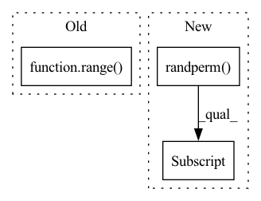

Pattern ID :24830
Before Change
centroid_ids = []
for _data in data:
_centroid_ids = random.choices(range( num_samples) , k=1)
for _ in range(K - 1):
centroids = _data[_centroid_ids] // (num_samples, num_features)After Change
centroid_ids = []
for _data in data:
_centroid_ids = torch.randperm(num_samples)[:1]
_centroid_ids = _centroid_ids.to(_data.device)
for _ in range(K - 1):
centroids = _data[_centroid_ids] // (num_samples, num_features)In pattern: SUPERPATTERN
Frequency: 3
Non-data size: 3
Instances Fragment ID: 76680250
Project Name: tky823/dnn-based_source_separation
Commit Name: 81f39baf67d036843ce01722c84470c109b0b03d
Time: 2021-11-22
Author: delta9guitar97@gmail.com
File Name: src/algorithm/clustering.py
M Class Name: KMeansBase
N Class Name: KMeansBase
M Method Name: _init_kmeans_pp(2)
N Method Name: _init_kmeans_pp(2)
M Parent Class: nn.Module
N Parent Class: nn.Module
M File Name: src/algorithm/clustering.py
N File Name: src/algorithm/clustering.py
M Start Line: 78
M End Line: 95
N Start Line: 90
N End Line: 107
Before Change
centroid_ids = []
for _ in range(batch_size):
_centroid_ids = random.sample(range( num_samples) , K)
centroid_ids.append(_centroid_ids)
centroid_ids = torch.Tensor(centroid_ids).long() // (batch_size, K)After Change
centroid_ids = []
for _ in range(batch_size):
_centroid_ids = torch.randperm(num_samples)[:K]
centroid_ids.append(_centroid_ids)
centroid_ids = torch.stack(centroid_ids, dim=0) // (batch_size, K)
centroid_ids = centroid_ids.to(data.device) Fragment ID: 76680251
Project Name: tky823/dnn-based_source_separation
Commit Name: 81f39baf67d036843ce01722c84470c109b0b03d
Time: 2021-11-22
Author: delta9guitar97@gmail.com
File Name: src/algorithm/clustering.py
M Class Name: KMeansBase
N Class Name: KMeansBase
M Method Name: _init_kmeans_random(2)
N Method Name: _init_kmeans_random(2)
M Parent Class: nn.Module
N Parent Class: nn.Module
M File Name: src/algorithm/clustering.py
N File Name: src/algorithm/clustering.py
M Start Line: 55
M End Line: 63
N Start Line: 67
N End Line: 75
Before Change
drop_num = int(node_num * self.ratio)
idx_drop = np.random.choice(node_num, drop_num, replace=False)
idx_nondrop = [n for n in range( node_num) if not n in idx_drop]
adj = to_dense_adj(data.edge_index, max_num_nodes=node_num)[0]
adj = adj[idx_nondrop, :][:, idx_nondrop]
After Change
_, edge_num = data.edge_index.size()
keep_num = int(node_num * (1-self.ratio))
idx_nondrop = torch.randperm(node_num)[:keep_num]
mask_nondrop = torch.zeros_like(data.x[:,0]).scatter_(0, idx_nondrop, 1.0).bool()
edge_index, _ = subgraph(mask_nondrop, data.edge_index, relabel_nodes=True, num_nodes=node_num)
return Data(x=data.x[mask_nondrop], edge_index=edge_index) Fragment ID: 76680249
Project Name: divelab/dig
Commit Name: 1d5b8789cd1b259527840a3f481f7dff5e4b96db
Time: 2021-08-09
Author: xieyc95@gmail.com
File Name: dig/sslgraph/method/contrastive/views_fn/sample.py
M Class Name: UniformSample
N Class Name: UniformSample
M Method Name: do_trans(2)
N Method Name: do_trans(2)
M Parent Class:
N Parent Class:
M File Name: dig/sslgraph/method/contrastive/views_fn/sample.py
N File Name: dig/sslgraph/method/contrastive/views_fn/sample.py
M Start Line: 25
M End Line: 31
N Start Line: 25
N End Line: 30